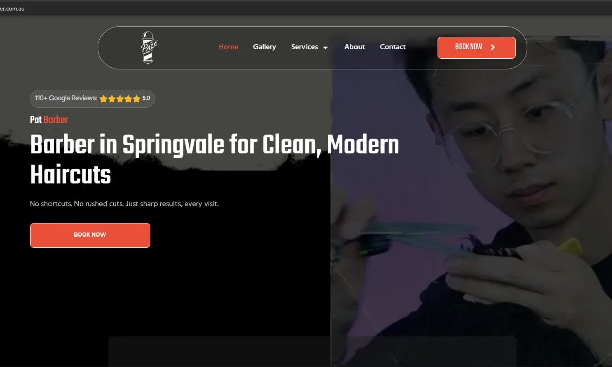
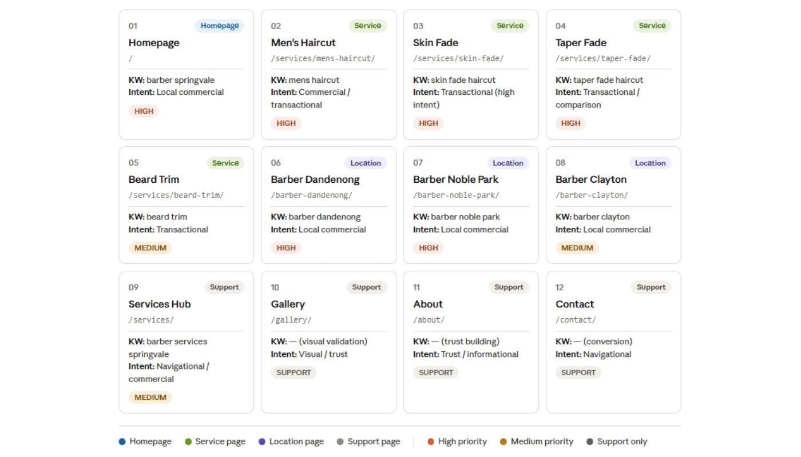

- Square booking page with zero SEO value
- GBP existed but category, services and description were incomplete
- Zero Google visibility for any local barber search
- Relying entirely on word of mouth and Instagram
- No tracking, no keyword strategy, no analytics
- Build a proper website that could rank on Google
- Target Springvale and surrounding Melbourne suburbs
- Set up full tracking from scratch
- Properly optimise the existing GBP
- Create a foundation for Phase 2 expansion
- Keyword research and site architecture planning
- WordPress and Elementor build — 12 pages
- All on page SEO and content writing
- DNS migration from Square to Hostinger
- GSC, GA4 and GTM setup from scratch
- GBP optimisation — category, services, description, images


I started with keyword research in SEMrush before planning a single page. The goal was not just to find keywords but to understand what different searchers want when they look for a barber in Springvale. Someone searching for a skin fade has different intent to someone searching for a barber near me. Those two intents need two different pages, not one page trying to serve both.
Every keyword was grouped by intent and mapped to a specific page before building anything. This is how you prevent two pages competing against each other on Google, which is one of the most common mistakes in local SEO.
I made a key decision about the beard trim page early on. Pat offers beard trims only as an add on to a haircut, not a standalone booking. So instead of building a standalone beard trim service page, I adjusted that page to reflect the actual service offering. That decision came from understanding the business, not from following a template.
For the suburb pages covering Dandenong, Noble Park and Clayton, each was built with its own distinct angle. Templated suburb pages with the same copy across all three would cause duplicate content issues and cannibalisation.


Built the full 12 page site in WordPress using Elementor. Migrated the domain from Square to Hostinger, which required updating DNS records, monitoring propagation, and making sure the site came back online cleanly with no downtime. Installed and configured Rank Math for all on page SEO management including schema, sitemaps and breadcrumbs.
Wrote and structured content for all Phase 1 pages based on the keyword blueprints. Each page has a keyword aligned H1, supporting headings structured around what the searcher needs to see, internal links placed with contextual anchor text, and a meta title and description written for click through rather than just keyword coverage. I used Claude and ChatGPT to help draft content outlines and then reviewed and refined every page myself before publishing.
Set up Google Search Console, GA4, and Google Tag Manager from scratch before launch. Verified site ownership in GSC, submitted the XML sitemap, and confirmed priority pages were being indexed. Ran a pre-launch Screaming Frog crawl to check heading structure, meta coverage and internal links. Compressed all images to WebP format with descriptive alt text on every image.
The GBP already existed but had never been properly set up. I went through the full profile and updated the primary category, added complete service listings with individual descriptions, rewrote the business description with target keywords naturally included, ensured the NAP details were consistent, and uploaded a full set of images. A properly optimised GBP is the fastest local authority signal for a business trying to appear in the map pack.
Note: Site launched recently. Results reflect early stage data. New domains typically take three to six months to build real ranking momentum.
Impressions growing as Google indexes the service and suburb pages. Clicks still low, consistent with a new domain not yet in top 5 positions.
Google is crawling the new structure and matching pages to relevant searches. This is what healthy early stage indexation looks like.
Monthly GSC review. Suburb pages gaining impressions first get priority for internal linking and supporting content in Phase 2.
Which barber related searches are generating impressions. Confirms keyword targeting is being picked up in the right market.
High impression, low click queries are the next meta title improvement targets. Unexpected queries are new content opportunities for Phase 2 planning.
The 12 page Phase 1 build is the foundation. More pages will be added as the site earns authority and GSC data shows which suburb and service searches are gaining real traction.
New pages will only be added when there is a clear keyword opportunity and enough domain authority to support ranking in that search space. Adding too many pages too early without authority means none of them rank.
Phase 1 — Complete (12 pages)
- Homepage
- About
- Services hub
- Men's haircut
- Skin fade
- Taper fade
- Beard trim (add on positioning)
- Kids haircut
- Springvale
- Dandenong
- Noble Park
- Clayton
Phase 2 — Planned
- More suburb pages as GSC shows nearby demand
- Additional service pages based on search data
- FAQ and informational content
- Pages added only when data supports it
Architecture must match the actual size and stage of the site. A 12 page Phase 1 that is clean and well structured is far more valuable than 30 pages added at once with no authority to support them.
Page strategy has to reflect the real business offering. The beard trim being an add on changed an entire page before a single word was written. That kind of insight only comes from understanding the business first.
Suburb pages need genuinely distinct angles. Dandenong, Noble Park and Clayton are close geographically but Google treats them as separate searches. Templated copy across all three would have caused cannibalisation.
Early stage GSC data tells you about crawl behaviour before rankings move. Knowing what it means in context and what it does not tell you yet is just as important as knowing what it does show.